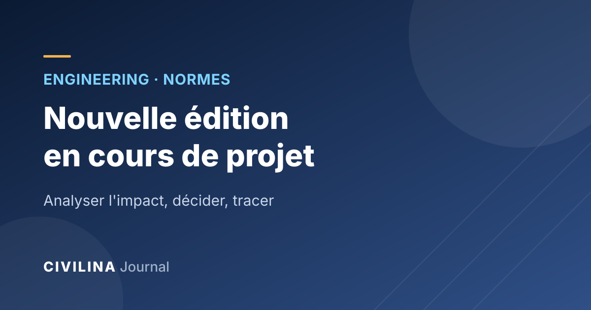

Accueil › Journal › Nouvelle édition d'une norme
Engineering · NormesNouvelle édition d'une norme en cours de projet : analyser, décider, tracer

Un projet de construction dure souvent plusieurs années. Pendant ce temps, les normes évoluent : nouvelle édition, amendement, annexe nationale révisée, texte retiré. Faut-il tout mettre à jour ? Continuer avec l'ancienne édition ? La réponse n'est ni automatique ni intuitive. Elle se décide, se justifie et se trace. Voici une méthode simple pour le faire.
Ce qui fige l'édition d'un projet
Sur un projet, les éditions applicables sont en principe fixées par les documents du marché : cahier des charges, spécifications techniques, liste des normes de référence. C'est sur cette base que le concepteur a dimensionné, que l'entreprise a chiffré et que le planning a été établi.
La règle de bon sens est donc la suivante : l'édition fixée par le marché s'applique, tant qu'une décision de changement n'a pas été prise. Une nouvelle édition publiée en cours de route ne remplace pas automatiquement l'ancienne sur le projet.
Attention toutefois aux références non datées : lorsqu'un document cite une norme sans année, il renvoie en principe à la dernière édition. C'est pourquoi il vaut mieux figer les éditions dès le démarrage, dans le plan qualité ou le registre des exigences.
D'où viennent les changements
| Événement | Ce qu'il change |
|---|---|
| Nouvelle édition | Le texte est révisé ; des exigences peuvent être ajoutées, supprimées ou modifiées |
| Amendement | Une modification ciblée de l'édition en vigueur |
| Corrigendum | La correction d'erreurs du texte, sans changement de fond voulu |
| Annexe nationale révisée | Les choix nationaux évoluent ; certaines valeurs peuvent changer |
| Retrait ou remplacement | Le texte n'est plus en vigueur et renvoie vers un autre |
| Évolution réglementaire | Un texte devient obligatoire, ou une exigence légale change |
| Demande du client | Le maître d'ouvrage souhaite appliquer une édition plus récente |
Analyser l'impact sur le projet
L'analyse d'impact ne consiste pas à relire toute la nouvelle édition. Elle porte uniquement sur les exigences utilisées par le projet, celles qui figurent dans le registre d'applicabilité. Pour chacune, on compare l'ancienne et la nouvelle rédaction, puis on évalue les conséquences :
| Domaine | Questions à se poser |
|---|---|
| Études | Les notes de calcul, plans ou spécifications doivent-ils être repris ? |
| Achats | Les produits commandés restent-ils conformes ? Les certificats demandés changent-ils ? |
| Chantier | Les ITP, méthodes, critères d'acceptation ou fréquences d'essais changent-ils ? |
| Ouvrages déjà réalisés | Sont-ils concernés, ou seulement les travaux à venir ? |
| Coûts et délais | Le changement entraîne-t-il un surcoût ou un décalage ? |
| Contrat | Faut-il un accord du client, un ordre de service ou un avenant ? |
Souvent, la conclusion est rassurante : les exigences utilisées par le projet n'ont pas changé, ou seulement à la marge. Mais il faut l'avoir vérifié pour pouvoir l'affirmer.
La méthode en six étapes
- Détecter. La veille normative signale la nouvelle édition, l'amendement ou le retrait.
- Identifier. On repère dans le registre les exigences du projet qui proviennent du texte concerné.
- Comparer. Pour ces exigences seulement, on compare l'ancienne et la nouvelle rédaction, en s'appuyant sur l'avant-propos qui résume souvent les principales modifications.
- Décider. La personne habilitée propose de conserver l'édition du marché, d'adopter la nouvelle, ou de l'adopter pour une partie des travaux seulement. La décision est soumise au client lorsque le contrat le prévoit.
- Mettre à jour. Si la nouvelle édition est retenue, on met à jour le registre, les ITP, les spécifications et les modèles de documents, puis on informe les équipes et les sous-traitants.
- Tracer. La décision, sa justification, sa date et son périmètre sont enregistrés. Les PV établis avant et après la décision restent cohérents avec l'édition applicable à leur date.
Changement obligatoire ou volontaire
Deux situations très différentes doivent être distinguées :
- Le changement imposé : lorsque la réglementation rend une exigence obligatoire, ou lorsqu'un texte de référence est retiré sans alternative, le projet doit s'adapter. La question n'est plus de savoir s'il faut changer, mais comment, et qui en supporte les conséquences au sens du contrat.
- Le changement volontaire : lorsque la nouvelle édition apporte une amélioration souhaitable mais non imposée, la décision relève d'un arbitrage entre bénéfice technique, coût, délai et risque. Elle se prend avec le client.
Dans les deux cas, la décision doit être écrite. Une adoption « de fait », par un ingénieur qui utilise spontanément la nouvelle édition, crée des incohérences entre documents et fragilise les PV.
Exemple type
Grâce à cette trace, un auditeur pourra comprendre plus tard pourquoi deux fréquences d'essai différentes coexistent dans les PV du projet, et vérifier que chacune était la bonne à sa date.
Que deviennent les documents déjà émis ?
Adopter une nouvelle édition ne rend pas caducs les documents produits avant la décision. Trois principes évitent la confusion :
- un document reste lié à l'édition applicable à sa date : une note de calcul ou un PV établi selon l'ancienne édition n'est pas faux, il est daté ;
- les documents encore en vigueur sont révisés lorsque le changement les concerne : nouvel indice, mention de l'édition retenue et de la décision qui l'a motivée ;
- les documents de fin de projet indiquent clairement les éditions utilisées pour chaque partie d'ouvrage, afin que l'exploitant ou un expert puisse s'y retrouver.
Organiser une veille normative légère
Il n'est pas nécessaire de disposer d'un service dédié pour suivre les évolutions des normes utilisées. Quelques règles suffisent :
- tenir une liste unique des textes utilisés par l'entreprise et par chaque projet, avec leur édition ;
- désigner un responsable de la veille, même à temps très partiel ;
- vérifier l'état des textes à une fréquence fixe, et à chaque démarrage de projet ;
- utiliser les services d'information des organismes de normalisation ou des abonnements lorsque l'entreprise en dispose ;
- partager les évolutions importantes en réunion technique, avec leur impact sur les projets en cours.
Une base normative structurée facilite ce travail : chaque exigence y est rattachée à son édition, ce qui permet de voir immédiatement les projets concernés par un changement.
Les erreurs fréquentes
- Appliquer spontanément la dernière édition sans décision écrite.
- Ignorer un changement imposé par la réglementation.
- Relire toute la nouvelle norme au lieu de cibler les exigences utilisées par le projet.
- Mettre à jour l'ITP sans mettre à jour le registre et les spécifications.
- Reprendre des contrôles passés qui étaient conformes à l'édition applicable à leur date.
- Oublier d'informer les sous-traitants et le laboratoire.
Checklist
- Les éditions applicables au projet sont figées dans un document de référence.
- Une veille identifie les nouvelles éditions, amendements et retraits.
- Les exigences du projet concernées par le changement sont identifiées.
- L'impact est analysé : études, achats, chantier, ouvrages réalisés, coûts, délais, contrat.
- Le caractère obligatoire ou volontaire du changement est établi.
- La décision est écrite, justifiée, datée et validée par les parties prévues.
- Le registre, les ITP et les documents concernés sont mis à jour.
- Les équipes, les sous-traitants et le laboratoire sont informés.
Un changement d'édition bien géré tient en une page de décision. Mal géré, il peut remettre en cause des mois de contrôles.
- ISO 9001 — Systèmes de management de la qualité — Exigences (maîtrise des modifications, informations documentées).
- ISO 10006 — Lignes directrices pour le management de la qualité dans les projets (maîtrise des modifications).
- Documents du marché : liste des normes et éditions applicables au projet.
L'exemple présenté est illustratif. Les conséquences contractuelles d'un changement d'édition dépendent de chaque marché et de la réglementation applicable.

Ingénieur civil et PMP, fondateur de Civilina. Expérience en management de projet, qualité, QHSE et coordination opérationnelle, en Algérie et à l'international.
Suivre les éditions applicables à vos projets ?
La base normative de CIVILINA Engineering rattache chaque exigence à son édition, pour voir immédiatement les projets concernés par un changement.
Découvrir la base normative →